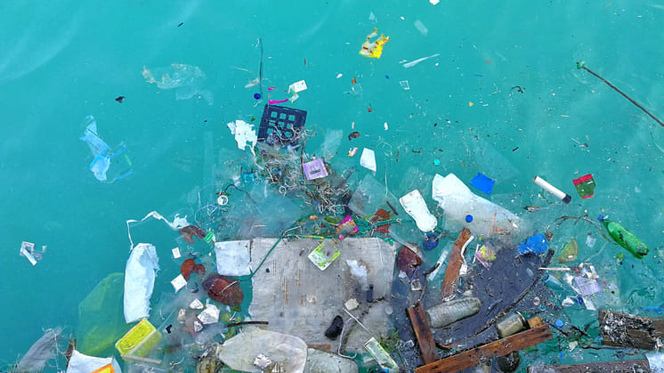
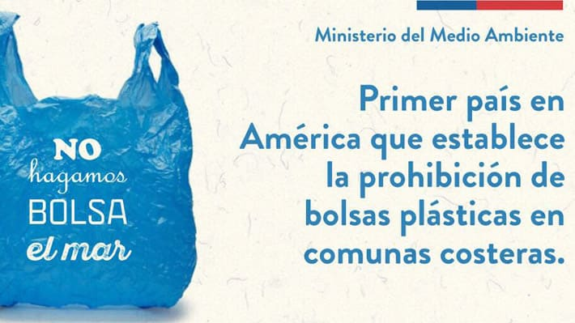
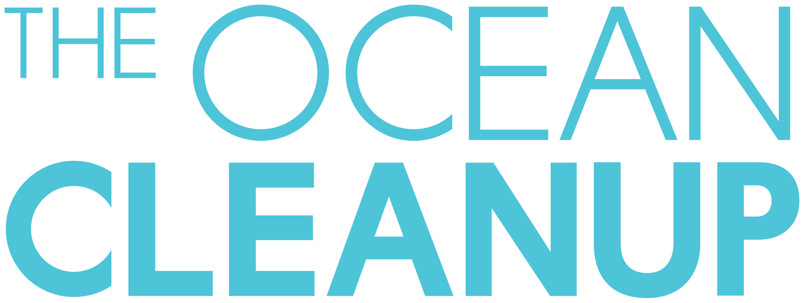
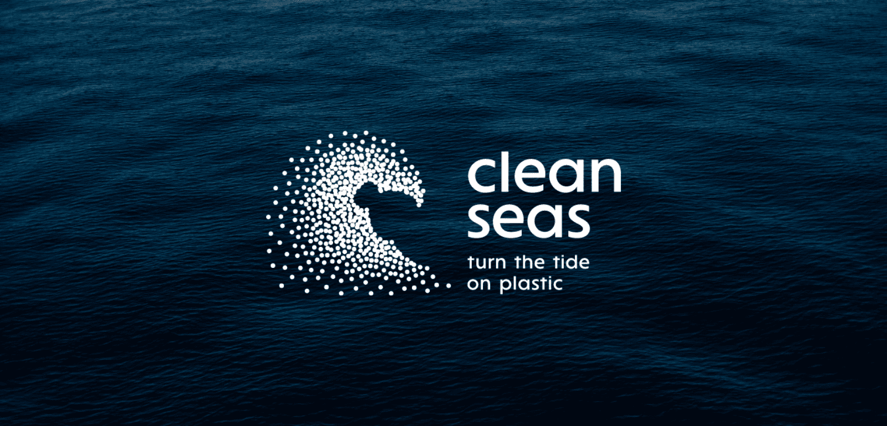
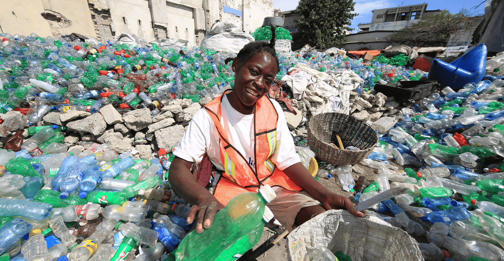

La batalla contra las bolsas plásticas en los océanos: iniciativas para salvar el planeta
María José Jiménez-Victoria Silva-Blanca Ward
La contaminación por plásticos en los océanos es uno de los mayores desafíos medioambientales de los últimos tiempos. Según la Organización de Naciones Unidas (ONU) son más de 8 millones de toneladas de plásticos los que entran al océano cada año, donde las bolsas plásticas ocupan un lugar destacado en la lista de los desechos. The World Counts asegura que los seres humanos utilizan aproximadamente 5 billones de bolsas de plástico al año y alrededor de 300 millones de bolsas llegan al océano Atlántico cada año, siendo ese solo uno de los cinco océanos del mundo. Debido a su capacidad para flotar y moverse rápido, estas bolsas amenazan a especies marinas, contaminan ecosistemas costeros y a medida que pasa el tiempo se van convirtiendo en microplásticos que ingresan en la cadena alimenticia. Sin embargo, las distintas acciones de gobiernos, leyes, comunidades locales y ONG están marcando una diferencia en la lucha contra esta problemática.

Problema global que pide soluciones urgentes
Los océanos del mundo están llenos de plásticos debido a las constantes malas prácticas de consumo. Es el diseño liviano de las bolsas plásticas lo que permite que sean transportadas por el viento y el agua, terminando creando masivas acumulaciones como el Gran Parche de Basura del Pacífico, generando una mancha de residuos flotantes del tamaño de varios países.
La ONU estima que más de 100.000 mamíferos marinos y un millón de aves mueren cada año por consumir plástico o enredarse en él. Un ejemplo muy común son las tortugas marinas, pues confunden las bolsas con medusas, alimento principal de ellas. Al ingerir la bolsa plástica se produce un bloqueo intestinal causando la muerte. Estos efectos negativos no solamente afectan a la fauna, sino que también a las personas que consumen comida marina, pues los microplásticos provenientes de las bolsas contaminan el agua y se incorporan en el pescado y mariscos que llegan a los platos de los consumidores.
Principales Países Contaminadores de Plásticos
Se estima que entre 4.8 y 12.7 millones de toneladas métricas de plástico ingresan al océano cada año. Un estudio de 2017 determinó que el 80% del plástico mal gestionado en los océanos proviene de cinco países asiáticos: China, Tailandia, Vietnam, Indonesia y Filipinas, y una actualización en 2021 confirmó resultados similares.
De estos 10 países, hasta la fecha, ninguno ha implementado la prohibición total del uso de bolsas plásticas. Solo leyes que disminuyen su uso y toman otras opciones más sostenibles.
Por ejemplo, en Estados Unidos, California fue el primer estado en prohibir bolsas plásticas de un solo uso en 2014. Otros estados como Nueva York, Nueva Jersey, Oregón, Vermont, Washington, y más recientemente Colorado y Rhode Island, han adoptado medidas similares. Sin embargo, en algunos estados (como Florida), existen leyes que prohíben a los municipios implementar restricciones a las bolsas plásticas.
Contaminación plástica por región
La contaminación por plásticos en los océanos representa una crisis medioambiental que alcanza cada rincón del mundo. Las siguientes estimaciones de las cinco regiones principales muestran la cantidad de residuos plásticos, incluyendo las bolsas plásticas que contaminan los océanos:
Asia Oriental y el Pacífico: Esta región emite un porcentaje significativo de bolsas plásticas, tal como refleja el gráfico, un 14% aproximadamente. Países como China son grandes contribuyentes debido a su alta producción y consumo plástico. Por otro lado está Japón, que a pesar de ser un país que ha hecho esfuerzos por disminuir las bolsas plásticas, la dependencia de ellas sigue siendo grande.
Asia del Sur: Aunque tiene una menor contribución, un 7%, la región sigue enfrentando problemas de contaminación plástica. India se destaca debido a la falta de infraestructura de reciclaje y el excesivo uso de plásticos en zonas muy pobladas.Filipinas es uno de los principales emisores de plástico. Según EFE, agencias de noticias internacionales, esta desecha más de 3.3 kilos de plástico por habitante al año, debido a la alta densidad poblacional y sistemas inadecuados de gestión de residuos.
Latinoamérica y el Caribe: Con el mayor porcentaje del gráfico, un 20%, la región enfrenta desafíos graves. Según estimaciones del Banco Mundial y su informe What A Waste, más de 3.7 millones de toneladas de plástico llegan al océano al año , siendo las bolsas plásticas uno de los contaminantes principales debido a la falta de regulación en muchos países de la región. Brasil es el país de Latinoamérica que más contamina el océano con residuos plásticos. Swissinfo, portal de noticias Suizo, asegura que el país sudamericano es responsable de verter cada año 1.3 millones de toneladas, representando un 8% del plástico que llega a los mares a nivel mundial.
África Subsahariana: Aunque su contribución no parece alarmante, con un 9%, esta región lidia con un manejo ineficiente de residuos plásticos. La gestión de basura en áreas rurales es limitada, lo que hace más fácil la llegada de bolsas plásticas al océano. Nigeria cada año genera 2,5 millones de toneladas de residuos plásticos, siendo las bolsas las principales dentro de esa cifra, pues los ciudadanos consumen agua en ellas. Estudios científicos demuestran que cada día se tiran a la calle entre 50 y 60 millones de bolsas de agua usadas, asegura la ONU.
África del Norte y Medio Oriente: Representa aproximadamente un 13% en el gráfico. Según datos del Banco Mundial esta región se destaca por su elevado consumo de plásticos desechables per cápita que finalmente terminan en los océanos, contribuyen con más de 6 kg de desechos plásticos. Las bolsas representan un gran problema debido a su baja tasa de reciclaje. En los Emiratos Árabes Unidos, cada persona usa en promedio más de 4.8 kg.
Leyes antibolsas de plástico
Ante la urgente preocupación sobre los océanos, son varios los países que han implementado leyes y regulaciones para reducir o prohibir el uso de bolsas plásticas de un solo uso debido a los efectos negativos que tienen sobre el medio ambiente, entre ellos están:
Impactos en la Reducción del Uso de Bolsas Plásticas
Al analizar las diferentes leyes que prohíben o restringen el uso de bolsas plásticas de un solo uso, pudimos comprobar un impacto positivo tanto en la reducción de la contaminación en los océanos, como en el consumo de estas bolsas llegando a alternativas sostenibles. Aunque este impacto puede variar según el país y región, al unirlos, podemos confirmar una disminución del uso de este plástico, lo que beneficia directamente a los océanos y su contaminación. Aunque es difícil obtener cifras exactas sobre el plástico en los océanos, con la implementación y el esfuerzo de estos países, se ha confirmado un gran efecto en la reducción de la contaminación visual y un descenso de plásticos en las playas y áreas costeras.
1. Unión Europea: Según la Comisión Europea, tras la implementación de la directiva de bolsas plásticas en 2015, el uso de bolsas plásticas de un solo uso en la UE se redujo en un 80% entre 2010 y 2020. En términos concretos, se pasó de 200 bolsas por persona por año en 2009 a cerca de 30 bolsas por persona en 2020.
2. Reino Unido: Según el gobierno británico, la implementación de la tarifa de 5 peniques por bolsa en 2015 redujo el uso de bolsas plásticas en un 80% en las tiendas grandes del Reino Unido. Esto equivale a un descenso de 9.000 millones de bolsas plásticas al año.
3. Kenya: El uso de bolsas plásticas se redujo casi en su totalidad. Según el Ministerio de Medio Ambiente de Kenia, en los primeros meses de la implementación, las bolsas plásticas fueron prácticamente erradicadas del comercio, y se vio un descenso significativo en la contaminación visual y en las obstrucciones de drenajes.
4. Ruanda: Desde entonces, el uso de bolsas plásticas ha disminuido drásticamente. La contaminación visual se redujo considerablemente, y el país es conocido por sus paisajes limpios y libres de plásticos.
5. India: En 2018, India lanzó un plan para eliminar gradualmente las bolsas plásticas, y aunque la implementación ha sido más lenta, algunas ciudades como Delhi y Mumbai han logrado reducir significativamente el uso de estas bolsas. Según el gobierno de Delhi, el uso de bolsas plásticas se redujo en más del 50% en la ciudad tras la implementación de la tarifa y las restricciones.
6. Tanzania: Desde su implementación, el uso de estas bolsas ha disminuido drásticamente en el país. Las autoridades reportan que la cantidad de bolsas plásticas en las calles y áreas naturales ha disminuido notablemente.
7. Costa Rica: Desde su aplicación, el consumo de bolsas plásticas ha disminuido significativamente en los comercios del país. Se ha registrado una reducción de hasta el 70% en el uso de bolsas plásticas en algunos comercios.
Chile 21.100
Chile ha sido reconocido mundialmente por su lucha contra las bolsas plásticas, destacándose en Latinoamérica por su legislación. En 2018, se promulgó la Ley 21.100, la cual prohíbe la entrega de bolsas plásticas en todo tipo de comercios. Esta normativa conocida como "Chao Bolsas Plásticas" se ha destacado a lo largo de los países como un caso exitoso de cambio cultural y político. Esta ley tiene como propósito, disminuir el impacto ambiental de los plásticos, los cuales son de difícil degradación y contribuyen en la contaminación oceánica y del suelo.
Aspectos principales de la Ley 21.100: Desde el 3 de febrero de 2020, se prohibió el uso de bolsas plásticas en supermercados, tiendas y comercios a lo largo de todo el país. La normativa exige a los comercios ofrecer alternativas sostenibles, como bolsas reutilizables. Por otro lado se implementaron multas por incumplimiento y se crearon sanciones para los comercios que sigan entregando bolsas plásticas a sus consumidores. Sin embargo la ley contempla excepciones para algunos productos, permitiendo el uso de las bolsas plásticas para ciertos alimentos como, pescados, frutas y verduras bajo condiciones específicas.
Impacto de la Ley 21.100:
Desde su implementación, la ley ha tenido resultados positivos en la reducción del uso de bolsas plásticas en Chile. Según datos del Ministerio del Medio Ambiente, tras la promulgación de la ley, se ha logrado evitar el uso de más de 4.800 millones de bolsas plásticas en Chile, lo que equivale a más de 35.000 toneladas de plástico. Según datos de Greenpeace. Para el año 2022, la ley logró reducir en un 56% la generación de residuos plásticos, contribuyendo así a la mejora del medio ambiente y la salud de los ecosistemas marinos.
Por otro lado, se ha creado un cambio cultural y una conciencia ambiental más amplia, la ley ha creado un cambio en la mentalidad de los consumidores. Muchos ciudadanos han adoptado el uso de bolsas reutilizables y han logrado entender el impacto de los plásticos en el medio ambiente. Por último de acuerdo a los efectos en la industria, aunque la prohibición de las bolsas plásticas ha generado ciertas tensiones en el ámbito comercial, la industria ha sido capaz de desarrollar y promover alternativas más sostenibles, como bolsas de papel o reutilizables.

Iniciativas de ONG para Reducir la Presencia de Bolsas Plásticas en los Océanos
Además de las legislaciones, diversas organizaciones, tanto gubernamentales como no gubernamentales, han jugado un papel crucial en la lucha contra la contaminación de plásticos en los océanos. Estas iniciativas, no solo se enfocan en reducir el uso de plásticos sino también en sensibilizar a la población, generar otras alternativas sostenibles y recolectar los diferentes residuos en el mar. Estas organizaciones han tenido un impacto significativo en la reducción de la contaminación por plásticos en los océanos y la generación de residuos plásticos algunas son:
The Ocean Cleanup: Es una organización global dedicada a la recolección de plásticos en los océanos y ríos, mediante técnicas y sistemas de tecnología avanzada. Su misión es eliminar la mayor cantidad de plástico de forma efectiva.
Esta organización, en 2023, logró recolectar un total de 8.531 toneladas métricas de plástico, logrando un avance que no se había visto en la historia. El objetivo final es eliminar el 90% de los plásticos en los océanos para 2040, un plan que requiere colaboración internacional y apoyo financiero constante
The Ocean Cleanup
Es una organización global dedicada a la recolección de plásticos en los océanos y ríos.

Clean Seas: Es una organización lanzada por el Programa de las Naciones Unidas
para el Medio Ambiente (UNEP), el cual busca reducir el uso de plásticos de un solo
uso en más de 70 países. Esta campaña trabaja fomentando políticas públicas, sensibilizando
a la población y colaborando con diferentes empresas para que adopten alternativas más sostenibles.
Clean Seas
Iniciativa de la ONU que busca reducir el uso de plásticos de un solo uso en más de 70 países.

Plastic Bank: Otra organización es Plastic Bank, la cual ha implementado un modelo
que incentiva a las personas a recolectar plásticos, a cambio de dinero o bienes básicos.
Este se ha implementado en diferentes países en vía de desarrollo, como Haití, y ha generado
un gran impacto, ya que no solo reduce desechos, sino que genera ingresos para familias que
lo necesitan.
Plastic Bank
Modelo innovador que incentiva la recolección de plásticos a cambio de dinero o bienes básicos.

Un esfuerzo que necesita continuidad
La lucha contra las bolsas plásticas en los océanos es una tarea monumental que requiere la colaboración de gobiernos, ONG, empresas y ciudadanos. Iniciativas como The Ocean Cleanup, Plastic Bank y políticas como la Ley 21.100 en Chile han demostrado que el cambio es posible. Sin embargo, el problema es complejo y necesita acciones sostenidas y multidimensionales.
A medida que más países adoptan medidas y tecnologías innovadoras, la esperanza de un futuro con océanos limpios se hace más real. Pero el verdadero desafío radica en transformar la cultura global del consumo hacia una que valore la sostenibilidad, no solo como una opción, sino como una necesidad urgente.
Recomendaciones para Reducir el Uso de Bolsas Plásticas
Usa bolsas reutilizables de tela, algodón orgánico o materiales reciclados. Mantén una o dos siempre disponibles y compra productos a granel.
Reutiliza las bolsas plásticas para otros fines, como guardar basura o empacar objetos pequeños.
Apoya leyes que restrinjan el uso de bolsas plásticas y opta
por marcas que usen empaques sostenibles.


 15.06.59.png)